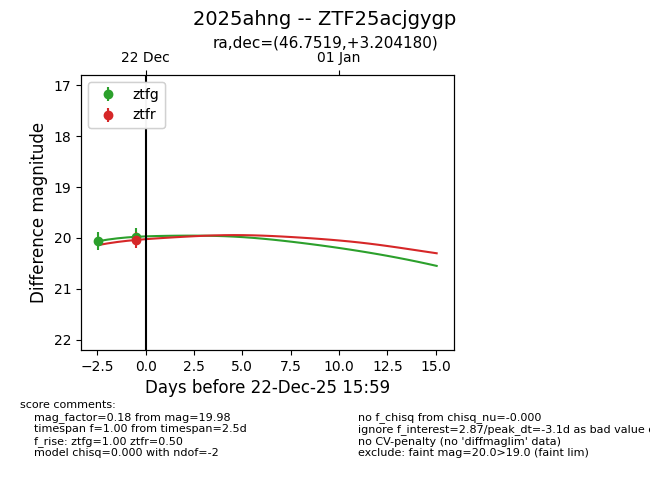
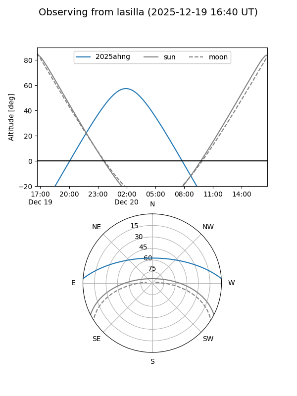
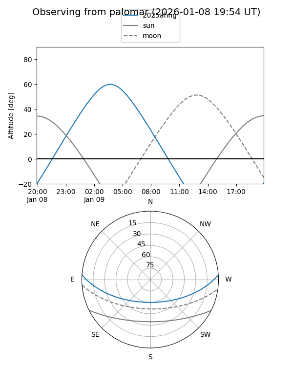

2025ahng
Target 2025ahng at 2025-12-20 05:29
Aliases and brokers:
FINK: fink-portal.org/ZTF25acjgygp
Lasair: lasair-ztf.lsst.ac.uk/objects/ZTF25acjgygp
ALeRCE: alerce.online/object/ZTF25acjgygp
TNS: wis-tns.org/object/2025ahng
YSE: ziggy.ucolick.org/yse/transient_detail/2025ahng
alt names
ZTF25acjgygp (ztf,fink_ztf)
2025ahng (tns,yse)
Coordinates:
equatorial (ra, dec) = 46.7519,+3.20418
equatorial (HMS+DMS) = 03:07:00.46,+03:12:15.05
galactic (l, b) = (175.4035,-45.40806)
Flags:
Photometry:
last ztfg=20.06
1 ztfg detections
Lightcurve

Visibility


Additional plots